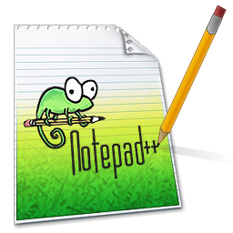

Opinión:
Luego de analizar las características de cada uno de los editores de HTML y además de haberlos utilizado en la computadora,
el entorno seleccionado es el Notepad++. Las razones a continuación:
- Su facilidad y sencillez de uso.
- El orden que se consigue al programar y escribir cada línea de código.
- Los colores ayudan al entendimiento y van muy de acuerdo a su función.
- A pesar de ser un software gratuito, ofrece todo lo necesario y más.
